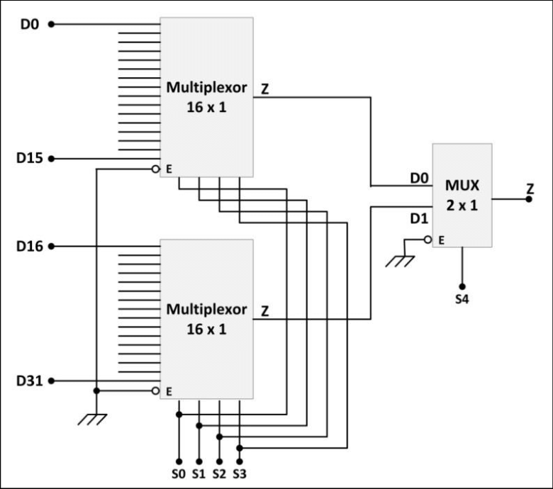
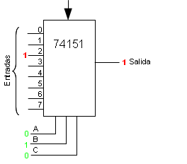
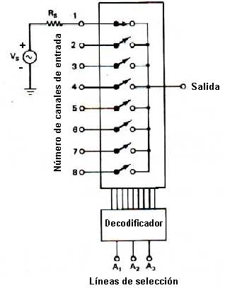
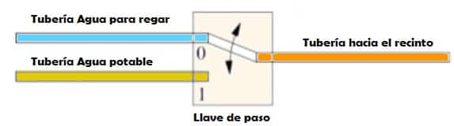
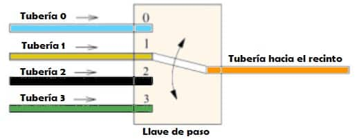

Multiplexores
El multiplexor, también conocido de manera acortada como “MUX“, es un circuito lógico combinacional diseñado para conmutar una o varias líneas de entrada en una sola línea de salida común mediante la aplicación de una lógica de control.
Los multiplexores funcionan como conmutadores de acción muy rápida que gestionan varias líneas de entrada llamadas “canales” y conectan una de estas entradas a la línea de salida en función de la señal de control.

Los multiplexores pueden ser:
Circuitos digitales hechos con puertas lógicas de alta velocidad para cambiar datos digitales o binarios.

Circuitos analógicos usando transistores, MOSFETs o relés para conmutar una de las entradas de voltaje o corriente en una sola salida.

Como funciona un multiplexor
El principio de funcionamiento de un multiplexor se puede entender de manera muy sencilla a través de un ejemplo.
Vamos a emplear una serie de tuberías controladas por una llave de paso como en la siguiente imagen:

Como podemos ver en el primer ejemplo tenemos:
-Dos tuberías de entrada con dos tipos de agua según su uso.
-Una llave de paso con la que se elegirá el tipo de agua en cada momento.
-Una tubería de salida que es común a todas las de entrada y por la que circulará el agua que esté “seleccionada” por la llave de paso.

Este último ejemplo es igual que el primero, a excepción de que existen cuatro tuberías de entrada en vez de dos.
En resumen, un multiplexor es un elemento que es capaz de seleccionar, a través de una señal de control (posición de la llave de paso), la señal de entrada que va a haber a su salida.
Ver el siguiente video como un complemento de lo antes mensionado